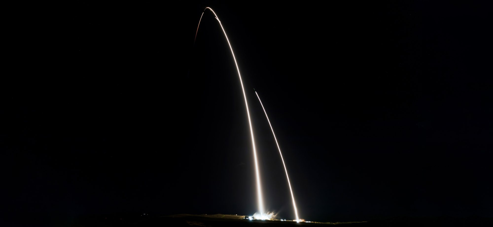
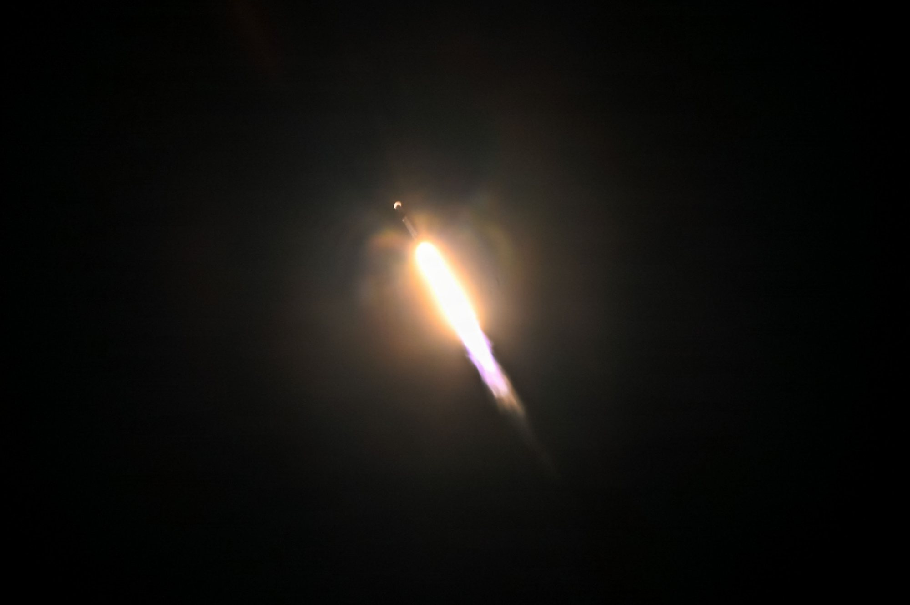

Venerdì sera, ora della California, un Falcon 9 lascia la rampa SLC-4E della base di Vandenberg con un carico classificato della Space Force. Domenica all’alba, ora locale, dalla stessa rampa parte un altro Falcon 9, questa volta con satelliti spia del National Reconnaissance Office. In mezzo ci sono 32 ore, 3 minuti e 21 secondi. Non è lo stesso razzo che vola due volte: sono due razzi diversi, ma è lo stesso pezzo di cemento, la stessa torre, lo stesso sistema di rifornimento e la stessa squadra che deve rimettere tutto in ordine. È il nuovo record di SpaceX per due lanci consecutivi dallo stesso pad, e SpaceX lo ha rivendicato con una frase semplice: il nostro giro più veloce tra due lanci dalla stessa rampa.
Due lanci, una sola rampa
La prima metà del record è USSF-317. Il Falcon 9 decolla da SLC-4E sabato 21 novembre alle 05:20 ora italiana, le 20:20 di venerdì in California, dopo un rinvio di 24 ore deciso giovedì sera senza spiegazioni pubbliche. Il primo stadio B1100, all’undicesimo volo, atterra sulla nave drone Of Course I Still Love You nel Pacifico.
La seconda metà è NROL-136. Il conto alla rovescia arriva a zero domenica 22 novembre alle 13:23:56 ora italiana, le 4:23 del mattino in California. Dopo circa due minuti e un quarto il primo stadio si separa, inverte la rotta con l’accensione di ritorno e alle 13:31 circa, ora italiana, si posa sulla Landing Zone 4, la piazzola di atterraggio a pochi passi dalla rampa. SpaceX aveva avvertito che nelle contee di Santa Barbara, San Luis Obispo e Ventura si potevano sentire uno o più boom sonici. Il secondo stadio prosegue verso l’orbita bassa con il carico classificato. Anche le due metà dell’ogiva, la carenatura che protegge i satelliti, erano al primo volo.
Il booster di domenica, B1097, ha alle spalle una carriera tutta californiana: Sentinel-6B per la NASA e l’Europa, la missione Twilight, NROL-172, Transporter-17, USSF-259 e otto lanci Starlink. Quello di domenica è il suo quattordicesimo volo; per la Landing Zone 4 è il trentottesimo atterraggio, e per la famiglia Falcon il seicentottantesimo recupero di un primo stadio.

Il record nei numeri
Il precedente primato di SLC-4E risaliva a giugno: 55 ore, 48 minuti e 21 secondi. Domenica il tempo è sceso di 23 ore e 45 minuti, quasi un giorno intero. Il record assoluto di SpaceX apparteneva invece alla rampa SLC-40 di Cape Canaveral, in Florida, con circa 45 ore fra due missioni Starlink consecutive a gennaio: anche questo è stato superato di quasi 13 ore. In altre parole, la rampa più trafficata della costa ovest ha battuto non solo il proprio primato, ma anche quello della rampa simbolo della cadenza Falcon in Florida.
Kiko Dontchev, vicepresidente di SpaceX per i lanci, ha parlato di un record mondiale di rotazione da lancio a lancio e ha aggiunto un dettaglio che conta più del numero: la squadra ci è arrivata con diverse ore di margine. Il prossimo obiettivo, ha scritto, è il giro in 24 ore.
| Quando | Che cosa | Dettaglio |
|---|---|---|
| giugno 2026 | Vecchio record di SLC-4E | 55 h 48 min 21 s fra due lanci |
| gennaio 2026 | Vecchio record SpaceX | circa 45 h fra due Starlink da SLC-40, Florida |
| 21 novembre, 05:20 | USSF-317 | B1100 all’11° volo, atterraggio in mare sulla nave drone |
| 22 novembre, 13:23 | NROL-136 | B1097 al 14° volo, atterraggio sulla Landing Zone 4 |
| prossimo traguardo | Giro in 24 ore | obiettivo dichiarato dal vicepresidente lanci di SpaceX |

Che cosa ha portato in orbita NROL-136
NROL-136 è la quindicesima missione dedicata a quella che il National Reconnaissance Office chiama architettura proliferata, e la quarta del 2026. Dietro la formula c’è un cambio di filosofia: l’agenzia che per decenni ha lanciato pochi satelliti spia enormi, a distanza di anni l’uno dall’altro, oggi mette in orbita bassa molti satelliti più piccoli, costruiti con SpaceX e Northrop Grumman, per osservare più spesso qualunque punto del pianeta e rendere la rete più resistente alla perdita di un singolo elemento. Il dispiegamento è cominciato nel maggio 2024 con NROL-146; la missione precedente della serie, NROL-179, era partita il 19 giugno 2026.
Il NRO, nel comunicato dopo il lancio, parla della più grande costellazione di satelliti nella storia del governo americano, di centinaia di satelliti già lanciati negli ultimi anni e di una frequenza di lancio in accelerazione fino a fine anno. Quanti satelliti ci fossero a bordo di NROL-136, e che cosa sappiano fare, non è stato detto: è la regola per le missioni classificate. Per il NRO è il sesto lancio del 2026, tutti affidati al Falcon 9 e tutti verso l’orbita bassa.
USSF-317, la prima metà del record
Anche il primo lancio della coppia ha una storia. Dopo USSF-317 il Dipartimento dell’Aeronautica degli Stati Uniti ha confermato per la prima volta a che cosa servono le missioni che quest’anno comparivano nei documenti pubblici solo con la sigla R: costruiscono la Space Data Network Backbone, una costellazione di proprietà del governo per il trasporto sicuro e veloce dei dati a livello globale. La dichiarazione parla di tre lanci riusciti in due settimane, di una capacità regionale entro quest’anno e di una copertura globale entro il prossimo. A maggio la Space Force aveva assegnato a SpaceX un contratto da 2,29 miliardi di dollari per costruire questa rete, pensata per lavorare accanto al Transport Layer della Space Development Agency.
Prima di USSF-317 le missioni della serie erano cinque: USSF-366 il 16 agosto, USSF-153 il 10 settembre, USSF-385 il 26 settembre, USSF-432 il 6 novembre e USSF-627 il 12 novembre. Dopo ognuna sono stati catalogati 23 satelliti. Due clienti governativi diversi, due costellazioni diverse, una sola rampa: il record di domenica è anche la fotografia di quanto la difesa americana si sia legata al ritmo di SpaceX.
Perché conta girare un pad in fretta
Un razzo riutilizzabile non basta, se la rampa resta ferma. Fra due lanci la squadra deve rimuovere ciò che resta del volo precedente, controllare e riparare i sistemi a terra, ricaricare le scorte di propellente e di gas, portare in rampa un nuovo razzo già integrato con il carico, sollevarlo, collegarlo, provarlo e rifornirlo. Ogni ora risparmiata su queste operazioni è un’ora in più di disponibilità per il cliente successivo. Con i booster che ormai superano i trenta voli e con le carenature recuperate in mare, il collo di bottiglia della cadenza si sposta sempre più sulle infrastrutture a terra.
Vandenberg lo mostra bene. USSF-317 è stato il settantasettesimo lancio supportato dalla base nel 2026, NROL-136 il settantottesimo, e la grande maggioranza parte proprio da SLC-4E, che con NROL-136 arriva a 72 lanci quest’anno. È la rampa dei Falcon in California: da lì partono i satelliti in orbita polare, le missioni militari e una parte consistente dei lanci Starlink. Su una base del genere ridurre il tempo fra due lanci significa poter dire sì a più missioni senza costruire subito una nuova rampa, e reagire più in fretta quando un cliente governativo chiede di accelerare. Il giro in 24 ore indicato da Dontchev è il passo successivo, e qui conta il margine di diverse ore con cui il nuovo record è stato raggiunto.
Che cosa aspettarsi adesso
Il prossimo lancio da Vandenberg è atteso già martedì 24 novembre, con una finestra di quattro ore che si apre alle 16:55 ora italiana. La Space Force prevede almeno altre due missioni con SpaceX entro la fine del mese, e il NRO annuncia un ritmo in crescita fino a fine anno. Il record di 32 ore, insomma, potrebbe non restare a lungo un’eccezione.
Il dossier sul rientro del Dragon cargo di CRS-35 passa all’archivio Notizie: questa pagina mette in primo piano il nuovo primato di cadenza di SpaceX sulla rampa californiana.
Fonti pubbliche e tracce
Ultimo aggiornamento editoriale: 23 novembre 2026. Nel corpo non si ripete la fonte a ogni frase: le tracce sono raccolte qui. Gli orari sono convertiti in ora italiana (UTC+1).
- SpaceX, pagina di missione NROL-136, 22 novembre 2026: decollo alle 4:23 PT da SLC-4E; 14° volo del primo stadio e missioni precedenti; atterraggio su LZ-4; possibili boom sonici; cronologia del volo.
- SpaceX su X, 22 novembre 2026: NROL-136 parte da 4E 32 ore dopo USSF-317, «our fastest turnaround between launches from the same pad».
- Kiko Dontchev, vicepresidente lanci SpaceX, su X, 22 novembre 2026: 32 h 3 min 21 s; precedente record di 45 ore a Pad 40; diverse ore di margine; prossimo obiettivo 24 ore.
- Launch Library 2, scheda NROL-136: decollo 12:23:56 UTC; pad turnaround 1 g 8 h 3 min 21 s; B1097 al 14° volo e atterraggio su LZ-4; conteggio dei lanci 2026 da SLC-4E. Dati confrontati con la scheda USSF-317 (decollo 04:20:35 UTC del 21 novembre).
- Spaceflight Now, Will Robinson-Smith, 21-22 novembre 2026: record precedente di SLC-4E (55 h 48 min 21 s, giugno) e assoluto (45 h, SLC-40, gennaio); 15ª missione proliferata, 4ª del 2026; 38° atterraggio su LZ-4 e 680° recupero Falcon.
- Spaceflight Now, 19-21 novembre 2026: USSF-317, rinvio di giovedì, B1100 all’11° volo su Of Course I Still Love You; dichiarazione del Dipartimento dell’Aeronautica sulla Space Data Network Backbone; contratto da 2,29 miliardi; missioni R precedenti e 23 oggetti catalogati.
- Space.com, Josh Dinner, 22-23 novembre 2026: sesto lancio NRO del 2026; architettura proliferata con SpaceX e Northrop Grumman; NROL-146 nel maggio 2024 e NROL-179 il 19 giugno 2026; numero di satelliti non divulgato.
- Noozhawk, Janene Scully, 22 novembre 2026: dichiarazioni del NRO dopo il lancio (quarta missione proliferata dell’anno, la più grande costellazione governativa, centinaia di satelliti); carenature al primo volo; prossimo lancio da Vandenberg martedì con finestra di quattro ore dalle 7:55 locali.
- National Reconnaissance Office, pagina di lancio NROL-136: pagina ufficiale della missione e patch.
Fotografie utilizzabili
- Due immagini a licenza libera: la foto U.S. Space Force del lancio USSF-317 (pubblico dominio) e la patch NRO di NROL-136 (pubblico dominio), entrambe da Wikimedia Commons.
- Copertina e una figura: immagini ufficiali SpaceX di NROL-136 dalla pagina di missione, credito SpaceX · uso editoriale non commerciale. Non risultano ancora foto libere del lancio di domenica.
- Dettagli in scheda dei crediti fotografici.
Apri il dossier CRS-35 archiviato · Archivio Notizie · Torna a SpaceX